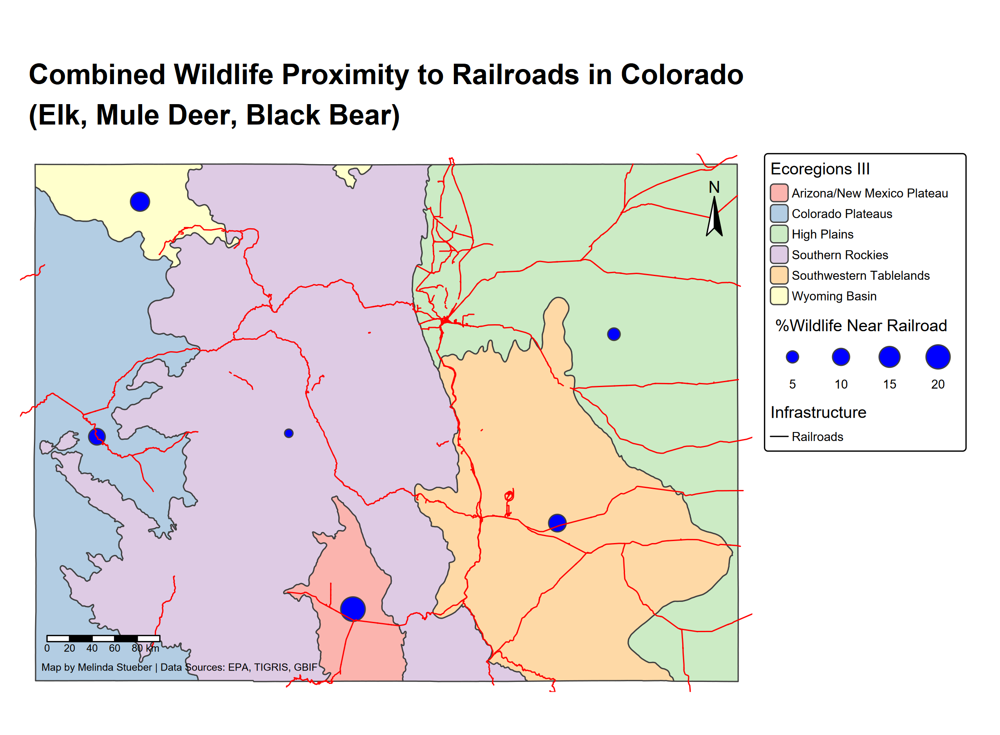

packageLoad <-
function(x) {
for (i in 1:length(x)) {
if (!x[i] %in% installed.packages()) {
install.packages(x[i])
}
library(x[i], character.only = TRUE)
}
}Coding and Mapping, Oh My!
Here is a sample of my blood sweat and tears🩸. I don’t want to shock you, but this is a student sample, emphasis on student. This was a challenging project as much of my experience coding has focused on data analysis without any of the geo-spatial pizzazz. 💥.
I wanted to look at railroads, eco-regions, and wildlife hot-spots around railroads in Colorado for this assignment I did for ESS523A.
This is a setup script I was taught to have and use throughout my projects. It is super helpful because then you don’t have to continually tell R to “please load these eight billion packages I need by name”. Just put the setup into a Rscript and save it as setup.R and off you go!
Set up script
function to check for package installation, then install and load libraries.
vector of packages to load
packages <- c('tidyverse',
'palmerpenguins',
'sf',
'terra',
'tmap',
'rmarkdown',
'tigris',
'elevatr',
'rgbif',
'soilDB',
'plotly',
'mapview',
"leaflet")
packageLoad(packages)First I actually needed to get data for roads (Vector Data).
source("setup.R")
rails <- rails()
CO_boundary <- states() %>% filter(STUSPS == "CO")
CO_rails <- st_filter(rails, CO_boundary)
ggplot() +
geom_sf(data = CO_rails)Next I needed to get data for Colorado Ecoregions (Vector Data).
CO_ecoregions <- st_read("C:/Users/melin/Geospatial/co_eco_l3/co_eco_l3.shp")
#Map came out tilted so need to transform to different CSR
CO_ecoregions_prj <- st_transform(CO_ecoregions, st_crs(CO_rails))
ggplot() +
geom_sf(data = CO_ecoregions_prj, aes(fill = US_L3NAME)) +
geom_sf(data = CO_rails) +
theme_minimal() +
labs(title = "Colorado Ecoregions Map")And then I needed to obtain data for migratory animals (Mule Deer, Elk, Black Bear).
#make a string of species names to use in the 'occ_data' function
species <- c("Cervus canadensis", "Odocoileus hemionus", "Ursus americanus")
#also make a string of common names
common_name <- c("Elk", "Mule Deer", "Black Bear")
#map2
species_occ <-function(sci_name, comm_name){
t_occ <-
occ_data(
scientificName = sci_name,
hasCoordinate = TRUE,
geometry = st_bbox(CO_ecoregions_prj),
limit = 2000
) %>%
.$data
t_occ$ID <- comm_name
t_occ <-
t_occ %>% distinct(decimalLatitude, decimalLongitude, .keep_all = TRUE) %>%
dplyr::select(Species = ID,
decimalLatitude,
decimalLongitude,
year,
month,
basisOfRecord)
return(t_occ)
}
output_species <- purrr::map2(species, common_name, species_occ)
occ <- bind_rows(output_species) %>%
st_as_sf(coords = c("decimalLongitude", "decimalLatitude"), crs = 4236)
occ_prj <- st_transform(occ, st_crs(CO_ecoregions_prj))Next, compile the data.
#make data more manageable, group by ecoregions and distance to railroad
railroad_buffer <- st_buffer(CO_rails, dist = 500)
occ_prj$railroad_intersections <- st_intersects(occ_prj, railroad_buffer)
#join data
eco_rail_occ <- st_join(occ_prj, CO_ecoregions_prj) %>%
mutate(near_rails_500m = if_else(lengths(railroad_intersections) == 0, FALSE, TRUE))
#summarize
all_sum <- eco_rail_occ %>%
st_drop_geometry() %>%
group_by(US_L3NAME) %>%
summarise(total_occ = n(),
total_railroad = sum(near_rails_500m == TRUE),
percent_railroad = (sum(near_rails_500m == TRUE)/total_occ)*100, .groups = "drop") %>%
filter(!is.na(US_L3NAME))
class(all_sum)
eco_spatial <- CO_ecoregions_prj %>%
inner_join(all_sum, by = "US_L3NAME")Map Data
tmap_mode("plot")
map <-tm_shape(CO_ecoregions_prj) +
tm_polygons(fill = "US_L3NAME", fill.scale = tm_scale_categorical(values = "brewer.pastel1"),
fill.legend = tm_legend(title = "Ecoregions III")) +
tm_shape(eco_spatial) +
tm_bubbles(size = "percent_railroad",
fill = "blue",
size.legend = tm_legend(title = " %Wildlife Near Railroad", orientation = "landscape")) +
tm_shape(CO_rails) +
tm_lines(col = "red") +
tm_add_legend(labels = "Railroads", type = "lines", col = "black", title = "Infrastructure") +
tm_title(
"Combined Wildlife Proximity to Railroads in Colorado\n(Elk, Mule Deer, Black Bear)", size = 1.5, fontface = "bold", position = tm_pos_out("center", "top")) +
tm_layout(frame = FALSE,
legend.outside = TRUE,
legend.outside.position = "right",
legend.outside.size = 0.3,
legend.text.size = .6,
legend.title.size = .8) +
tm_scalebar(position = c("left", "bottom")) +
tm_compass(position = c("right", "top")) +
tm_credits("Map by Melinda Stueber | Data Sources: EPA, TIGRIS, GBIF", position = c("left", "bottom"), size = 0.5, color = "black")
map
tmap_save(map, "C:/Users/melin/Geospatial/Rails_Wildlife_CO_map.png")
It isn’t the prettiest map in the world, but she’s mine and I was proud that it actually generated something. So if you’ve learned anything, know that if I can code, you can too! We are all learning, it is part of the fun, sometimes anger-inducing, process of R.